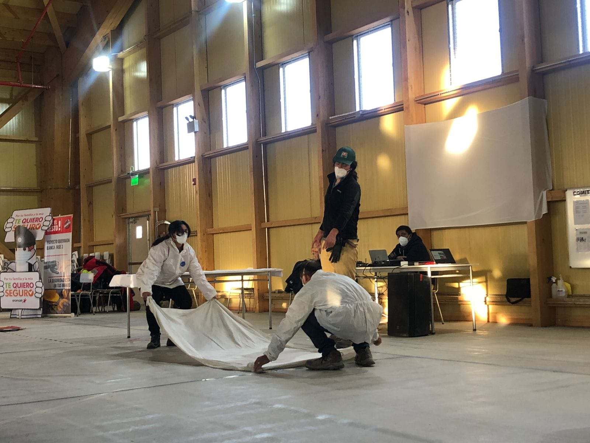
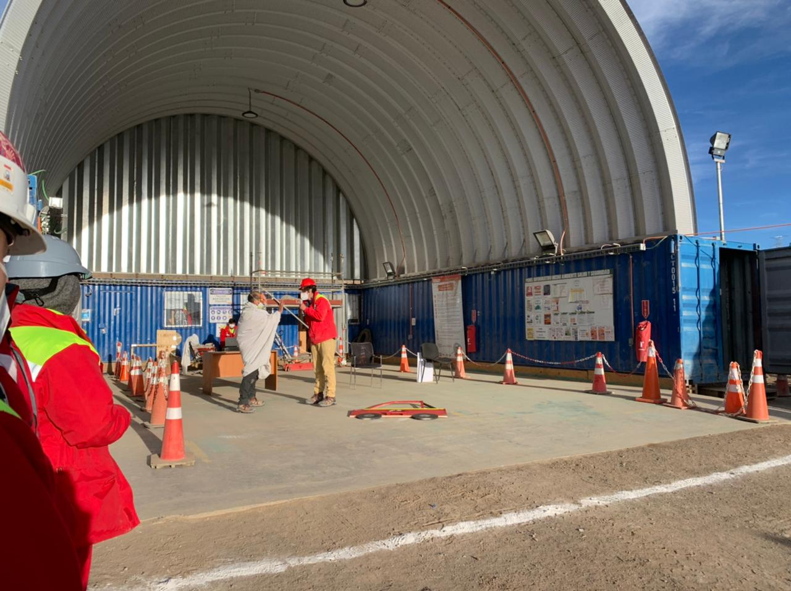
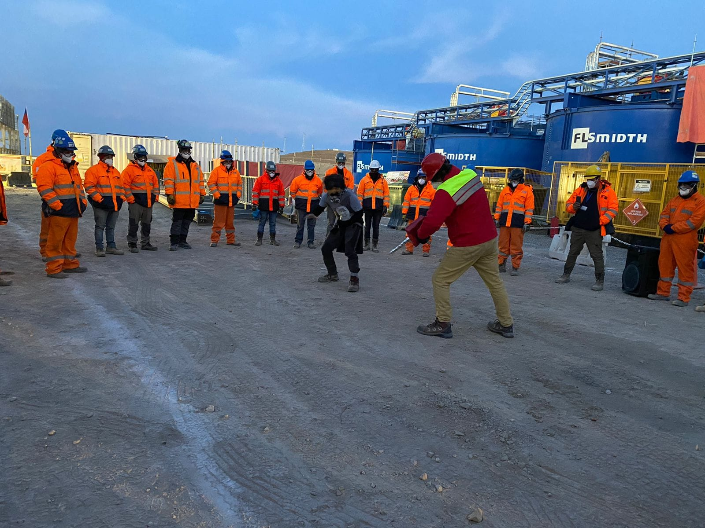
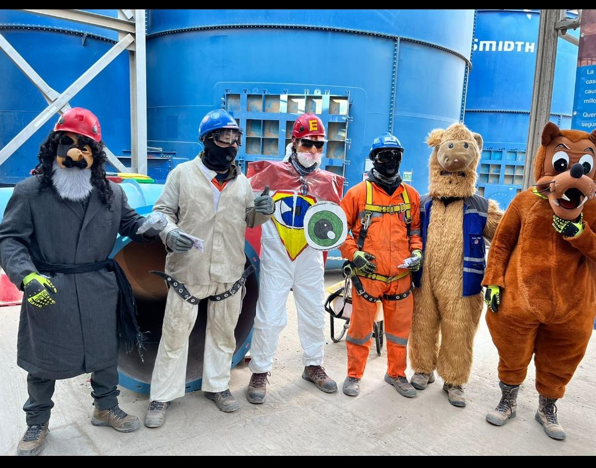
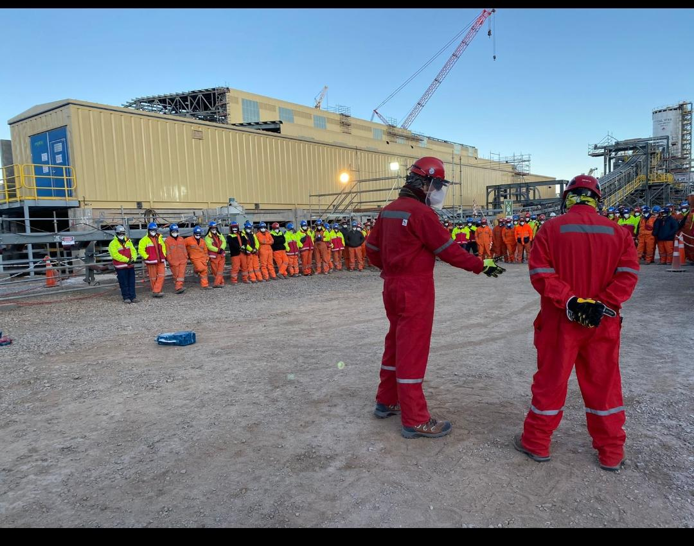
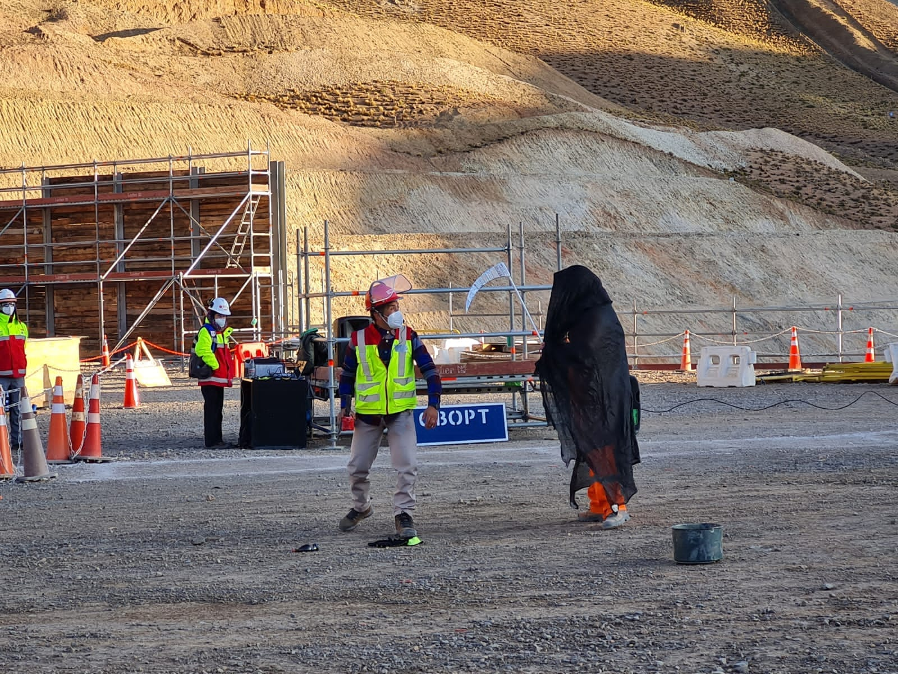

Los AST: Teatro Preventivo para Empresas
Una forma creativa, potente y efectiva de reforzar la seguridad laboral. En AST (Los Actores por la seguridad en el trabajo), impactamos y educamos a través del humor, la reflexión y el realismo, llevando mensajes clave en terreno con obras inmersivas de 20 a 35 minutos.
El aprendizaje que se siente, se recuerda
Conectamos con la amígdala cerebral a través del teatro profesional para romper la apatía y crear conciencia de seguridad permanente.
Adaptabilidad Multi-Sector
No somos solo para minería. Personalizamos nuestras intervenciones para Construcción, Logística, Retail, Manufactura, Energía, Forestal y Puertos.
Teoría del Anclaje Emocional
La emoción activa la memoria a largo plazo. Un mensaje de seguridad entregado mediante el teatro se retiene hasta 6 veces más que una diapositiva.
Resultados Tangibles
Entregamos reportes detallados de la encuesta de impacto para que tu departamento de SSO/HSE tenga métricas concretas para auditorías.
Resultados que transforman tu organización
Al implementar las intervenciones de AST en tus operaciones, no solo cumples con la normativa, también logras:
Temáticas de Alto Impacto
Cada obra aborda situaciones reales con un enfoque preventivo y emocionalmente potente.
¿Cómo lo hacemos?
La prevención no tiene por qué ser aburrida. Nuestro enfoque mezcla teatro profesional con contenidos técnicos.
Diagnóstico Previo
Recogemos información clave de la cultura preventiva y dolores de tu empresa.
Adaptación del Guion
Basado en riesgos reales de tu operación y usando un lenguaje cotidiano.
Función en Terreno
Teatro cercano, potente, dinámico con obras inmersivas de 20 a 35 minutos.
Reflexión Final
Opcional, espacio guiado para debate, preguntas o retroalimentación.
Proyecto Quebrada Blanca II (Teck / Bechtel)
Imágenes y video reales de nuestras intervenciones teatrales de seguridad inmersiva directamente en una de las operaciones mineras más grandes del país.
Registro de videoclip de los Riesgos Críticos de Vida
Solicitado y presentada a todas las empresas del proyecto minera Quebrada Blanca II






Elige el plan ideal para tu empresa
Todos los planes incluyen actores profesionales en terreno, elementos de protección personal (EPP) completos, seguro de responsabilidad civil y coordinación logística.
Básico
Perfecto para abordar riesgos críticos específicos de forma rápida y efectiva.
- 1 Presentación en terreno de una obra selecta de riesgos críticos.
- Catálogo de los 7 riesgos críticos prefabricados.
- Interacción post-función: Dinámica guiada de reflexión grupal de 10 min.
- Encuesta digital de impacto en los participantes.
- Reporte de adquisición efectiva de conocimientos.
Plan Empresa Segura
Diseñado para resolver problemáticas específicas y lograr un impacto más duradero.
- Levantamiento de información personalizado de la cultura preventiva de tu empresa.
- Creación de 1 obra específica: Guión adaptado a la realidad e historia de tu empresa.
- 3 Presentaciones en terreno (distribuidas en turnos o sucursales).
- Interacción y dinámica participativa tras cada obra.
- Evaluación profunda de impacto y adquisición final de conocimientos.
- Reporte ejecutivo final de desempeño con recomendaciones HSE.
Accidentabilidad Cero
Acompañamiento continuo y periódico para lograr erradicar los incidentes graves en tu operación.
- Servicio Anual continuo: Presencia permanente en el calendario preventivo.
- 1 Levantamiento personalizado de información de riesgos cada 3 meses.
- 12 Presentaciones selectas de teatro preventivo al año.
- Adaptación de libretos según evolución trimestral de riesgos de la empresa.
- Métricas de satisfacción y de impacto trimestrales completas.
- Dashboard de evolución de cultura de seguridad y reportabilidad.
Lo que dicen nuestros clientes
Gerentes de HSE y directores de prevención de diversas industrias respaldan el impacto del teatro preventivo de AST.
"Teníamos problemas con el correcto uso de los arneses y el trabajo en altura en los racks de despacho. La obra de AST retrató de forma cómica pero dramática lo que pasaba y caló hondo. La reportabilidad aumentó un 40% porque los operarios entendieron que el autocuidado no es una regla, es para volver sanos a casa."
"El Plan Empresa Segura superó nuestras expectativas. Desarrollaron una obra enfocada en el riesgo de caída de objetos e interacción hombre-máquina en nuestra principal obra vial. Los trabajadores conversaron y debatieron después de la función como nunca antes en una charla tradicional."
"Llevamos 8 meses con el plan de Accidentabilidad Cero de AST. Cada 3 meses hacemos un levantamiento de los casi-accidentes ocurridos y los actores lo plasman en la siguiente función. Las métricas trimestrales de satisfacción y adquisición de conocimientos nos han servido enormemente para respaldar la gestión del área ante el directorio."
*Los nombres de las personas y entidades han sido modificados para cumplir estrictamente con el Acuerdo de Confidencialidad (NDA) vigente firmado con nuestros clientes.
Derribando barreras: todo lo que necesitas saber
Respondemos con total claridad a las dudas y objeciones comunes de los departamentos de Finanzas, Prevención y Operaciones.
No es un show pasivo ni una distracción. Utilizamos la técnica del Teatro Fórum y el anclaje emocional respaldado por la neurociencia. Al presenciar situaciones de riesgo interpretadas con realismo y emoción, el cerebro de los colaboradores empatiza de inmediato y activa la amígdala cerebral, grabando las normas de seguridad en la memoria a largo plazo.
Además, no dejamos el aprendizaje al azar: realizamos una encuesta digital interactiva de adquisición de conocimientos post-función para medir la asimilación efectiva de los conceptos y entregar reportes con datos duros.
Prevenir un solo accidente menor ya financia el servicio completo de AST. El costo directo e indirecto de un accidente laboral (licencias médicas, reemplazos, paralización de faenas por la Inspección del Trabajo, multas y el aumento de la cotización adicional en la Mutualidad) es exponencialmente mayor que cualquiera de nuestros planes.
Invertir $700.000 en el Plan Básico, $2.300.000 en el Plan Empresa Segura o $6.500.000 en el Plan Accidentabilidad Cero reduce la accidentabilidad en un 35% promedio anual. Adicionalmente, entregamos informes ejecutivos y métricas de adquisición de conocimientos que sirven como evidencia de gestión activa de SSO ante el directorio y Mutuales.
Solo requiere 30 minutos en total. Desglosados en: 20 minutos de obra teatral de alto impacto y 10 minutos de reflexión guiada y encuesta digital.
No necesitas trasladar a los trabajadores a salas de capacitación ni sacarlos de la obra por horas. Nos instalamos directamente en terreno (patios de acopio, comedores, talleres, bodegas) y nos acoplamos a las charlas de inicio de turno (charlas de 5 minutos), pausas activas o cambios de turno. El impacto en la productividad operativa es prácticamente cero.
Para campañas rápidas, nuestro Plan Básico cubre de forma excelente los 7 riesgos críticos transversales. Sin embargo, si tus dolores son muy específicos (ej. interacción peatón-grúa horquilla en bodegas de frío o manejo de sustancias químicas específicas), el Plan Empresa Segura y el plan de Accidentabilidad Cero están diseñados para ti.
Realizamos un levantamiento técnico previo junto a tus prevencionistas de riesgos, estudiamos tus Procedimientos de Trabajo Seguro (PTS), analizamos tus incidentes reales del pasado e incorporamos el lenguaje técnico y modismos que usa tu personal en obra para crear un guión 100% personalizado.
Sí, califica plenamente. El artículo 21 del Decreto Supremo N° 40 (Ley 16.744 en Chile) exige que los empleadores informen de manera oportuna y conveniente a todos sus trabajadores acerca de los riesgos asociados a sus labores.
Al finalizar las obras de AST, se procesan las encuestas de impacto y conocimientos, y te entregamos un registro de asistencia digitalizado respaldado con el porcentaje de aprobación técnica de cada colaborador, sirviendo como evidencia válida e indiscutible ante la Inspección del Trabajo, Seremi de Salud y auditorías de Mutuales.
Absolutamente. Todos los actores de AST están capacitados en inducción de seguridad para entornos industriales de alto riesgo. Adicionalmente:
- Uniforme de faena básico: Cuentan con un uniforme básico neutro de faena, diseñado estratégicamente para poder ser complementado con el uniforme corporativo y el logotipo de cada empresa contratante, reforzando la identidad de la marca.
- EPP completo y normado: Casco de seguridad, calzado con puntera de acero, lentes de protección, chaleco reflectante tipo geólogo.
- Seguridad legal: Seguro de Accidentes Personales y Responsabilidad Civil de cobertura completa.
- Acreditaciones: Disponibilidad completa para inducciones "hombre nuevo" y procesos internos de acreditación en faena.
¿Conversamos sobre la seguridad de tus equipos?
Agenda una reunión virtual de ventas con nuestro equipo. Para tu tranquilidad y resguardo de la metodología única de AST, presentaremos un Acuerdo de Confidencialidad (NDA) antes de realizar el agendamiento formal de la videollamada.